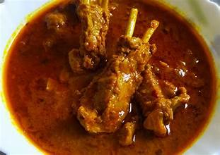

üç≤ Traditional Delicacies of Bihar
üçö Staple Dishes
Litti Chokha – Roasted wheat dough balls stuffed with spiced sattu, served with mashed potatoes and brinjal.
Khichdi – A comfort dish made of rice and lentils, typically served with pickles and curd.
Chana Ghugni – A spicy chickpea curry, enjoyed as a popular street food.
Dal Pitha – Rice flour dumplings filled with lentil stuffing, steamed to perfection.
Baingan Bharta – Mashed roasted eggplant mixed with mustard oil, garlic, and spices.
Bari-Kadhi – Fried lentil dumplings served in tangy and spiced yogurt gravy.
ü•ò Signature Curries & Meat Delicacies
Fish Curry – A spicy and tangy curry made with locally sourced fish and aromatic spices.
Chana Dal Fry – Lentils cooked with onion, garlic, and spices, often served with rice.

Mutton Curry – A delectable dish made with goat meat, slow-cooked in aromatic spices.
Chicken Curry – A spicy and flavorful dish made with tender chicken and traditional spices.

ü•ó Savory Snacks & Street Foods

Samosa – Deep-fried pastries stuffed with spiced potatoes, peas, and served with chutney.
Sev Bhujia – A crunchy snack made of gram flour, seasoned with spices and fried to perfection.

üçÆ Sweet Treats & Desserts
Thekua – A crispy and sweet snack made with whole wheat flour, jaggery, and ghee.


Khaja – A layered pastry fried and soaked in sugar syrup, offering a melt-in-the-mouth texture.
Balushahi – A deep-fried dessert, crispy on the outside and soft inside, soaked in sugar syrup.
Malai Peda – A rich and creamy dessert made from condensed milk, flavored with cardamom.
Parwal Ki Mithai – A unique sweet made by stuffing pointed gourd (parwal) with khoya and nuts.

ü•§ Refreshing Beverages

Sattu Drink – A cooling and nutritious drink made from roasted gram flour.
Lassi – A refreshing yogurt-based drink, flavored with sugar or salt.
Jal Jeera – A tangy and spicy drink made with cumin, mint, and lemon.
Welcome to Bihar's Non-Veg Delights
Explore the mouthwatering and flavorful non-vegetarian dishes of Bihar
Bihari Mutton Curry – A spicy and rich mutton curry prepared with mustard oil, onions, garlic, and a blend of robust spices.
Machhli Jhor (Fish Curry) – A delicious fish curry cooked in mustard oil, tomatoes, and spices, served with steamed rice.
Chicken Curry – A tangy and spicy chicken curry, flavored with mustard seeds, garlic, and traditional Bihari masalas.